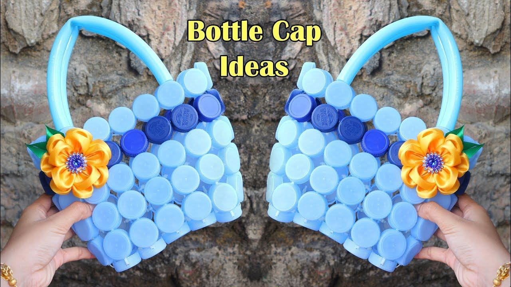

A. Bahan
- Tutup botol plastik bekas
- Selang plastik untuk pegangan
- Tali pengikat
- Lem perekat
- Hiasan bunga
Tutup botol plastik bekas yang sudah tidak digunakan bisa diubah menjadi tas yang kuat dan menarik.

| No | Bahan | Harga |
|---|---|---|
| 1 | Selang plastik untuk pegangan | Rp 8.000 |
| 2 | Tali pengikat | Rp 5.000 |
| 3 | Lem perekat | Rp 7.000 |
| 4 | Hiasan bunga | Rp 5.000 |
| Total Harga Bahan | Rp 25.000 | |
Perkiraan harga jual tas: Rp40.000
Laba (harga jual - harga modal): 40.000 - 25.000 = Rp15.000